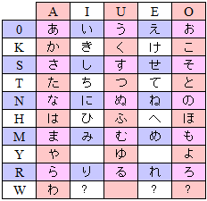

The last kana...sort of
At this point you have learned all of the 90 kana that are used
to spell words, but there are still three more that are used for
non-spelling functions. For example, in Japanese, all questions
end with a か. In English we use a rising tone to the same effect.
For right now, we won't worry about those kana, but we will revist
them when we cross those functions.
Japanese also has three kana that are "dying". They are mainly
used to write words introduced from European languages with Vo,
Vi, and Ve (or Wo, Wi, We). These were never popular and they are
not Japanese, so losing them isn't a big deal. We aren't going to
cover these at all unless we run into a rare word with that kana.
And last of all we will have to learn the diacritics. These are
like accents on the syllable. Not all syllables have just one use
and by adding a diacritic you can change a S sounds to Z or T to D.
We will learn those in the next lesson, but you are officially done
with kana after this lesson.

Are you ready for Japan?
So now that you are done with kana, are ready to visit Japan? Probably not. Even
if you could read and write the words you want to say, you still don't know what
to say. We will work on teaching you more words, phrases, and enough grammar to
at least sound like you are trying. Many Japanese speak some English and you may
find yourself speaking in a mixture of the two. The German's have a saying "nur
Bahnhof" or "only train station". It means that a tourist can only speak a few
critical words. The Japanese may find you funny, but they will be polite as long
as you are flexible.
Even with a good smattering of the language, you really aren't ready for Japan.
There are just things you won't know unless you are a native Japanese. Think about
the way that Americans use plates at an all-you-can-eat restaurant. The Japanese
tourist may not know that we always get a clean plate. Maybe that is a bad example,
but the idea is right. Every culture will have rules that no one thinks about
particularly because you learn them literally "at your mother's knee". As an adult
it is just "the way things are done". What rules does Japan have? Lots.
- When you use a hand towel in the bathroom, you should NEVER just crumple it up. Neatly refold the towel as a roll for the next person.
- Picking or blowing your nose should NEVER happen in public. Go into a bathroom to do things like that. The Japanese see it just as if you were picking your butt.
- The Japanese baths are public and very, very naked. It's not weird or about sex. Grandmas and little kids are all in the same water.
- Speaking of baths, you don't just get in the bath. First, you always wash and scrub your body really well. That hot water could be full of germs and dead skin otherwise.
- Finally, people with tattoos should not get in the bath. Tattoos are for gangsters and no one in Japan wants a dirty gangster in their bath. Many foreigners are tattooed and the bath will either deny them service, or ask them to cover up. Naked okay. "I love Mom" not so okay.
- Soy sauce does NOT go on rice, it's for the meat and toppings to be dipped in. It certainly is not to be poured over the rice bowl. Put a little in an empty bowl and dip your food into it instead.
- When you eat, don't bend close to the table as they do in the west. Instead, pick up the bowl or plate and eat close to your mouth.
- Slurping your noodles, even very loudly, is just fine. Even a compliment.
- Japanese people do not eat on the go. Even fast food or vending machine food is eaten while standing still. Often a person will buy their food, eat it, and dispose of the trash in the same location. Eating while walking looks...messy.
- Japanese people never pour their own drink. It looks like you are selfish and only care about yourself. If you need more drink, you can start by pouring someone elses. Often that person will immediately do the same for you.
- Using chopsticks is good, but watch how you do it. Never touch someone elses chopsticks, even with your own. Share food, but put it on a plate.
- Speaking of chopsticks, don't rub yours together and don't leave them sticking out of the bowl of rice. That last one looks like you are at a funeral.
- In Japan people do not tip. Tipping is seen as an insult. It's like you are saying "you are so bad that they can't possibly be paying for this work." At best they might think you forgot your change.
- In America, people sometimes bring a bottle of wine to a party, but in Japan even if you are just visiting someone's house, you should bring a gift. Not just a "hey I happen to have this" either. It should be wrapped to show care and respect for the host.
- Speaking of gifts, the Japanese play a fun game when you give them a gift. They always want to say it is appreciated, but unnecessary. Then they always accept the gift. It tells people that they are overly thoughtful and good.
- When you give something to another person, always used both hands. Even small things which won't be hurt by dropping should be given with two hands. In some cases, there is a little tray where you can "give" something to a person indirectly.
- Don't point with your finger. Japanese people will point with your whole hand. Don't even point at yourself, but you can tap your nose instead.
- People in Japan do not make loud noises unless it is an emergency. Just getting mad and loud, or scared and loud is just rude.
- Trains have their own rules about conduct. People should not talk loudly on the phone or to each other. Japan is crowded and you don't own the airwaves.
- On the other hand, if you are sitting in a train someone might fall asleep on you. That's normal. People are tired and they just support each other in this way.
- Last of all, if you are getting on a train and you don't quite fit... you will. The Japanese train stations actually pay people to "help" you on so the doors can close on time. Not in America, right?